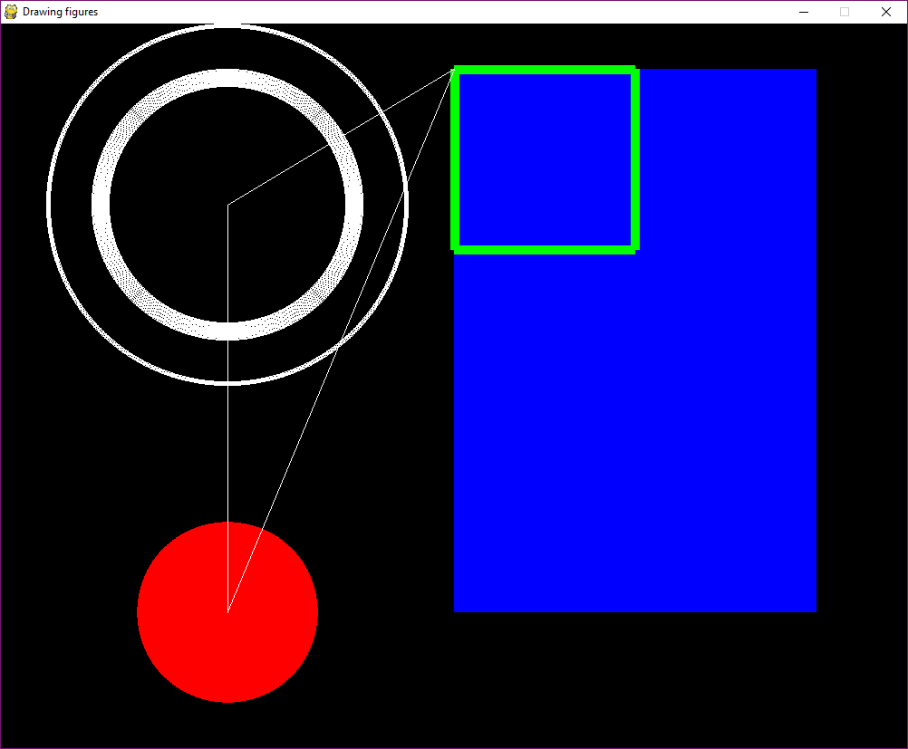

# A tibble: 3 × 2
State Purpose
<chr> <chr>
1 Go signal permission to cross
2 Att signal soon Stop
3 Stop No permission to cross 8 Interaction
When you decided to learn programming you probably had something different in mind than putting some values in variables or compare apple with pears in conditionals. Most likely, your were more thinking of creating something with a little more magic then ASCII letters printed to the console. Perhaps, you already have an idea for a smartphone app on your mind. Who hasn’t?
We won’t push you that far. But, with conditionals in your hand, you are prepared to get to the next level and develop interactive programs Interactive programs are those that run continuously and do something when the user presses a button or moves and clicks the mouse. They don’t do something completely random, except for some artistic installations, perhaps, but react in a purposeful way to user input. We can say, that a program executes an interaction model, a set of rules that describe the programs behaviour. Then we show you how to write interactive programs very efficiently by turning the transition table into transitionals.
In this chapter we do more than just show you how to use a conditional or a loop. You will notice that writing an interactive program is more than just coding. It is a development process with a sequence of steps where the output of one step is input for the next.
Your brain does The result is
[Interaction modelling] --> Transition table
--> [Coding transitionals] --> Interactive prototype
--> [Coding presentationals] --> Pygame program.First, we will teach you how to analyze an interaction problem and note down your ideas in a structured way, a transition table. Then we’ll show you how to implement a prototype for testing the interaction protocol by turning the transition table into transitionals. Finally, we’ll explain in more detail how to put the elements of interaction together in Pygame and give them a fluent appearance.
8.1 Interaction models
An interaction model describes when the program does what. As simple as this definition is, making an interaction model is not. Rather, creating this model is an important part of sincere software development and happens long before you start coding. In essence, when starting to work on an interactive program, the first you do is: switch off your computer, pull out pencils and paper and scratch your head.
What we are asking you to do is envisioning the program you are going to write, eventually. The formal output of the interaction analysis is just one table that somewhat abstractly describes the flow of the program. That does not mean, that during the analysis you may do use other representations, such as flow charts or screen scribbles. The opposite is the case: seeing your program from different angles, will help you to come up with a better interaction model and the results can be used downstream, such as screen scribbles for the visual design.
As complex it is, an interaction model can be broken down into three sets of elements: states, transitions and events:
- states are the different modes a program is in.
- transitions let the program move from one state to another
- events make these transitions happen
The scope of this book covers rather simple interactive programs only, psychological experiments. In order to explain the basics of interaction programming, we go for something even more simple: a Dutch traffic light.
8.1.1 Identifying states
The first step in the analysis is to identify states of the program. A state is a rather abstract term, so let’s see a few examples:
- a light switch has the two states On and Off
- the Dutch traffic light has the three signals Go, Attention and Stop
- In MS Word, there are several different modes to view a document: Read, Print, Web.
- …
If you are making a model of an existing system in front of your eyes, that’s called reverse engineering. One good heuristic to reverse engineer a system of states is to simply observe the different visual forms the display takes. Then, the states are examined further and are given a description and a label. So, let’s reverse engineer a Dutch traffic light by watching one cycle of signals:
. . R
. Y .
G . .You may be tempted at this stage to call the states by their appearance (Green, Yellow, Red). That is not exactly wrong, but it confuses the purpose of the state with its appearance. Imagine, you wanted to actually design a traffic light for people who are blind, using sounds. Then the light colors no longer describe the state well. Instead, the state description should state the purpose of states, which we note down in a table of states (TOS):
By keeping the states abstract, at a later point in the development you can decide, how to shape the user interface, visually or through other channels.
8.1.2 Identifying transitions
The second step in the analysis is identifying the transitions between states. The Dutch traffic light knows three transitions:
graph LR
Go --> Att
Att --> Stop
Stop --> Go
Cycling through a set of states is the most simple interaction protocol. It is unique, in that states are arranged in a closed cycle, which implies that every state appears exactly once on the left-hand side (the original state) and the right-hand side (the destination). As we will later see, this is why a single control is sufficient to manually operate a traffic light.
Most of the time, the interaction flow is more complicated. For example, the system you are developing may have bi-directional state transitions, branches and loops. We now introduce the method of transition tables, which breaks down the state transition analysis into a series of simple questions. For that, we collect all states that have identified, and assume that, potentially, there can be a transition between any two of them. The result is a square matrix of states. The empty cells of this table are the possible transitions, where the row denote the origin state, the columns are target states.
Go Att Stop
Go
Att
StopAccording to the empty transition table, the traffic light has nine possible transitions. But which of them make any sense and should be implemented? We start in the first row and ask: “Does it make sense that a state Go is followed by itself?” Here, the answer is No and you leave the cell empty. But, there are situations, where you would want to make such a “selfish” transition, think of a slide show program, that, whenever a button is pressed, presents the next picture. The state Present is followed by Present, until the last slide has been reached. A rather minimal slide show program would have the following transition table:
Welcome Present Goodbye
Welcome X
Present X X
Goodbye Back to traffic lights: “Does a transition from Go to Att make sense?” Absolutely! You make a cross. Then you do the same for the second and the third row, leaving blank the impossible transitions and marking the possible.
Go Att Stop
Go X
Att X
Stop XIt is important to understand, that transitions are not necessarily symmetric, which means teh lower and upper triangles in the transition table are usually not symmetric. In the case of a traffic light, you can go from Go to Att, but there is no transition back. In interaction models other than a uni-directional cycle, transitions can well be symmetric, think of the checkout process on webshops. Usually, they guide you through the process in a number of steps (billing address –> delivery address, credit card number), but allow you to go back to the previous step to do corrections.
graph LR
Delivery --> Billing
Billing --> Credit_card
Credit_card --> Billing
Billing --> Delivery
Delivery Billing Credit_card
Delivery x
Billing x x
Credit_card x Notice that in the traffic light example, every state is origin of exactly one transition, whereas in the checkout process there are two transitions originating at Billing. This is called branching. If you wonder how the program eventually decides which transition to take, read on about events.
8.1.3 Events: user input and internal conditions
The transition table tells you which of the possible transitions are allowed and should be implemented. It does not yet tell you when this is going to happen, exactly. An event is a condition that triggers a transitions. Events can be internal conditions or user input.
Internal conditions do not require user input. The program decides solely by itself, when to transit. This is why we call transitions on internal conditions automatic transitions. A typical case of automatic transitions, when something is supposed to happen at a certain moment in time, or after a period of time. To see this, assume that the Dutch traffic light runs automatically, without someone standing next to it (in a yellow vest) and pushing buttons. Of course, we do not want the traffic light to change states continuously or randomly, but only after a certain time has passed. For the interaction model that means we have to specify the resting time in every state. We do that right on the transition table by replacing the crosses with a brief description of the condition that makes the system leave the origin state:
Go Att Stop
Go 20s
Att 5s
Stop 20sIn words, the interaction model is expressed like the following:
- When in state Go, wait 20s, then transit to Att
- When in Att, wait 5s, then transit to Stop
- When in Stop, wait 20s, then transit to Go
In psychological experiments, such time-controlled transitions happen a lot. For example, many experiments manipulate the presentation time of visual stimuli to investigate subliminal priming and other unconscious effects. , where presentation time is so short, that people cannot consciously process the stimulus. For example, when very briefly seeing a picture of an apple, participants reportedly react faster to the question: “Is this a word? PEAR.” In subliminal priming experiments, in order to control cognitive processing time, stimuli are presented for a very brief moment, followed by a visual mask (to erase visual sensory memory). Finally, the response is acquired as a key press (which is user input) and the program proceeds to the next trial.
Stim Mask Resp
Stim 100ms
Mask 100ms
Resp XThat brings us to the second form of events: user input events. A transition that is triggered by user input is called an interactive transition. Only if there is at least one interactive transition, will we call it an interactive program. In most cases, user input is just pressing a certain key. Let’s first look at how a manual traffic light can be specified. Taking another look at the transition table tells us:
- there are three possible transitions
- at every origin state there is only one transition possible
Because there is only one transition possible at every moment, it seems we can go with just one key, let’s call it Next.
Go Att Stop
Go Next
Att Next
Stop NextIn this case, it seems fairly practical to give the traffic light operator a remote control with just one button. But note that for more complex systems that is not a good idea in terms of usability. Why? Because of what is known as mode confusion. The ideal example probably is one of these 1980 clunky digital watches, which not just told you the time, but also let you use stop timers, altitude alarms, step counters and brewing a nice cup of coffee. And all that functionality is controlled by just four flimsy buttons. What these buttons do, changes with the state the watch is in. For example, the lower left button could switch to another time zone in Watch, but do a reset in stop watch mode. The user has to learn from the manual what every button does in every state and has to be completely aware which mode the watch currently is in.
When designing more complex interactions it is therefore better to use different user inputs (keys presses) for different actions. That does not mean you have to use a totally new control for every cell in the transition table. There can be actions that are very similar across states, such as an action Next or Previous in the checkout process example:
Delivery Billing Credit_card
Delivery Next
Billing Previous Next
Credit_card PreviousNote that we keep the name of the controls rather abstract, denoting the action, not the physical key or mouse button. Like we ignored the visual appearance of states, we defer the design of physical input controls to a later state. How many different controls you finally use in your program is a matter of choice. However, there is at least one rule: The number of separate controls must be equal to or larger than the maximum number of interactive transitions in any row. According to this rule, the traffic light can have one or more controls, whereas the checkout program requires at least two (Billing).
In the checkout and traffic light examples, there is only one transition per state, but of course, there can be more than one. In the subliminal priming example, the participant’s response is whether the shown letter combination is a word, or not. That implies that two controls are needed at that transitions, say the controls Word and Not_word.
Stim Mask Resp
Stim 100ms
Mask 100ms
Resp Word or
Not_wordThe transition table is now complete. It covers states (in rows and columns), transitions (occupied cells) and events (what is in the cell). In the next section, we will build interactive programs by translating each cell in the table into a transition conditional.
8.1.4 Exercises
- German traffic lights differ from Dutch traffic lights in that they light Red and Yellow before switching to Go. Create a transition table.
- Identify states, events and transitions of a stopwatch program and create a transition table.
- A smart traffic light switches from Stop to Go automatically, when a car is approaching and the crossroads are clear. Analyze and create a transition table.
- Review the Stroop program and find the states in the code. Then, take a closer look how the STATE variable is used.
8.2 Programming interactive prototypes
One of the worst things that can happen in software development is that a flaw is introduced during an early state of planning, but is discovered when the program is almost finished. For that reason, it is good practice in software development to test models and catch flaws as early as possible. So, how can we test our interaction model? Of course, we could just implement the whole program and then see, if it does what was intended. But, if there truly are flaws, a lot of effort would have been wasted and a lot of work had to be redone. This catch-22 can be resolved by implementing the aspect of the system that you want to test, separately. Up to this point, we have specified the flow of interaction in the abstract manner of transition tables, at the same time completely ignoring visual design and physical controls. As you will see next, the transition table can quickly be translated into a simple piece of software, an interactive prototype, using just a few standard coding patterns. On this prototype the interaction model of the system can be tested and improved in isolation.
For the interactive prototype, we will turn the transitions from the table into transition conditionals or short: transitionals. As we have two kinds of transitions, automatic and interactive, we will also have to deal with interactive and automatic transitionals.
8.2.1 Interactive transitionals
The following code snippet implements two interactive transitional with the same origin, namely the transition from Billing to Delivery and Credit_card:
print(STATE)
key = input("Press a key: ")
if STATE == "Billing" and key == "p":
STATE = "Delivery"
if STATE == "Billing" and key == "n":
STATE = "Credit_card"Notice that
- the state of a program is maintained as a plain String variable
- the starting state is set as “Billing”
- interactive transitionals check for two conditions: current state and whether the respective key has been pressed
- a transition occurs by setting the variable
STATEto another value
The above code will only ask for user input once, change the state (or stay in Billing, if no valid input was entered) and terminate. Instead, we want this program to truly flow and be able to react on longer series of user actions. Basically, the only thing we have to do is put the transitionals into a loop. However, in this particular case, what would happen is that the program would never truly stop. For that purpose, we implement a general state called Exit, that ends the program. The transitions of Exit are special, in that this state always is the destination, never the origin. This is why we can omit the row. By allowing the user to jump to Exit from any other state, we are respecting their freedom in a very basic manner:
Delivery Billing Credit_card Exit
Delivery Next X
Billing Previous Next X
Credit_card Previous X, NextThe interaction prototype of Checkout looks like the following.
STATE = "Delivery"
while True:
print(STATE)
key = input("Press a key: ")
# interactive transitionals
if STATE == "Delivery" and key == "n":
STATE = "Billing"
continue
if STATE == "Billing" and key == "p":
STATE = "Delivery"
continue
if STATE == "Billing" and key == "n":
STATE = "Credit_card"
continue
if STATE == "Credit_card" and key == "p":
STATE = "Billing"
continue
if STATE == "Credit_card" and key == "n":
STATE = "Exit"
continue
if key == "x":
STATE = "Exit"
continue
if STATE == "Exit":
break
exit()Notice that:
- the loop itself comes with no conditions itself. It just plainly loops, until someone proves that the truth is not true.
- the print statement at the top of the while loop entirely replaces the graphical user interface at this stage.
- after every transitional, we have put a
continuestatement. Why? Because, when the State veriable is updated, it can fire up a second transitional. Check yourself, by reading the conditionals: within one iteration we would go from Delivery to Exit all the way through and we would not even see the intermediate steps printed to the console. Thecontinuestatement forces the loop to begin a new iteration, immediatly, omitting all the transitionals after the one that has fired. That makes sure that per iteration no more than one state transition takes place. - We use a transitional that does not ask for the state and therefore always triggers Exit when x is pressed
- the Credit_card –> Exit transitional uses
continuein order to reach theprint(STATE)command one more time. During that final iteration only, the last transitional (the one without destination) is encountered and thebreakstatement ends the loop.
In general, interactive transitional emerge from the transition table by the following pattern:
if STATE == <origin> and <event>:
STATE = <state>
continueNotice that every combination of state and event gets its own if ... continue block. We call this flat transitionals. Another way is to use nested transitionals, which have an an outer if block to interrogate the state and uses the inner if block to deal with all possible events, The general form is:
if STATE == <origin>:
if <event_1>:
STATE = <next_state_1>
elif <event_2>:
STATE = <next_state_2>
elif ...
continueThere is no difference in functionality between these two forms of transitionals, but for longer programs it may be easier to read. With nested transitionals, the checkout program would look like the following:
STATE = "Delivery"
while True:
print(STATE)
key = input("Press a key: ")
# interactive transitionals
if STATE == "Delivery" and key == "n":
STATE = "Billing"
continue
if STATE == "Billing":
if key == "n":
STATE = "Credit_card"
if key == "p":
STATE = "Delivery"
continue
if STATE == "Credit_card":
if key == "n":
STATE = "Exit"
if key == "p":
STATE = "Billing"
continue
if STATE == "Exit":
breakNotice that
- the indentation visually groups all transitions that belong to the same origin state
- we reduced the number of
continuestatements. Askeyis never changed inside a transitional, only a single event conditional is triggered at a time.
8.2.2 Automatic transitions
Sometimes we want a transition to happen due to internal conditions of the program, for example:
- stay in state Att, when 5 seconds have passed move on to Stop
- show the stimulus for 100ms, then move on to the distraction mask.
- after 20 trials of an experiment, make a pause.
- after all dias have been shown, give a Goodbye
A frequent case of automatic transitions is staying in a state for a certain amount of time, then move on to the next state. Take as an example a dia show program that automatically shows every picture for, say, 30 seconds. Fortunately, automatic transitions almost look the same, the only difference being that <event> becomes <condition>.
As you have experienced at the Stroop task theater play from chapter Chapter 1 dealing with time requires some extra tricks. For example, how do we let the automatic traffic light rest in the Go state for exactly 20 seconds? We set a timestamp and wait for the difference to become 20 seconds or longer. Fortunately, for interaction prototypes, there is a cheap and dirty trick to do that more straight-forwardly, which is the command sleep(20). It suspends the whole program and wakes it up after twenty seconds. Why is that dirty? For two reasons: First, it only works for interaction prototypes, but not Pygame programs. For example, when you are showing animated stimuli, putting the whole program on halt won’t work. Second, you will not be able to bypass the waiting time, say, the user wants to prematurely proceed to the next picture in the dia show.
from time import sleep
STATE = "Stop" # Att, Go
while True:
print(STATE)
if STATE == "Go":
sleep(2)
STATE = "Att"
continue
if STATE == "Att":
sleep(1)
STATE = "Stop"
continue
if STATE == "Stop":
sleep(2)
STATE = "Go"
continueA program can be (and typically is) a mix of interactive and automatic transitionals. For example, we could create a semi-automatic traffic light, where the operator only has to switch Stop and Go. When set to Stop, the program first goes to state Att, rests there for a few seconds and than automatically moves on to Stop.
from time import sleep
STATE = "Stop" # Att, Go
while True:
print(STATE)
if STATE == "Go":
input("Hit Return")
STATE = "Att"
continue
if STATE == "Att":
sleep(2)
STATE = "Stop"
continue
if STATE == "Stop":
input("Hit Return")
STATE = "Go"
continueNotice that
- the
inputcommands moved into the transitionals as otherwise the loop would prompt for input for automatic transitions, as well, which is just not the idea. Later, we will use the event handling mechanism of Pygame, which will provide a better solution for mixing interactive and automatic transitionals. - we have simplified the event handling. This traffic light needs just one control button to toggle Stop and Go, which here is any key (followed by Return) or just the Return key. That is not a general solution, but only works, because there is just one transition per state.
8.2.3 The timestamp method
As we have said, for a prototype, the sleep(s) is fine in most cases to cause a delayed reaction, but not when we start coding with Pygame. Then we have to use the timestamp method, which has little benefits for interactive prototypes. Still, it seems in order to introduce this method on the somewhat cleaner code of the interactive prototypes.
The following code shows, how to implement a time delay by setting a timestamp and comparing the difference with current time in the automatic traffic light example.
from time import time
STATE = "Go" # Att, Go
time_stamp = time()
while True:
current_time = time()
if STATE == "Go" and current_time - time_stamp >= 2:
STATE = "Att"
time_stamp = time()
print(STATE)
continue
if STATE == "Att" and current_time - time_stamp >= 1:
STATE = "Stop"
time_stamp = time()
print(STATE)
continue
if STATE == "Stop" and current_time - time_stamp >= 2:
STATE = "Go"
time_stamp = time()
print(STATE)
continueNotice that
- the second condition of time-controlled transitionals carries the waiting time
- the function
time()returns the number of seconds since 1 January 1970. That is called the Unix epoch. - because the starting state Go is time-controlled, we have to set a first timestamp before the
whileloop starts. - the print statements have been moved into the transitionals. Read more on that below.
current_timeis set once at the beginning of every iteration. Read more on that below.
It appears as if going from the sleep method to the time method is just some superficial change in code. In fact, there is one dramatic change once the program runs, although you may not even realize it on the first glance. With sleep, the while loop does exactly one iteration per state change, that is one per five seconds (combined sleeping time). When entering a transitional, the sleep is initiated and the program rests. Then it wakes up and finds the continue, eventually. In the timestamp version, the program never sleeps. The while loop cycles as fast as it can, which is incredibly fast, at every iteration picking up current_time and comparing it to the timestamp. Find out yourself, by putting the print(STATE) back to its old place, at the top of the loop.
We will use the exact same method in Pygame. But, here it is, why the method does not work well with the prototype. The system we have chosen was the traffic light. That was on full purpose as it is fully automatic. The problem is the input command, as it waits for input. While it does, the loop stands still. In order to combine user input with a fast while loop, we would need another way of handling input events. That is what Pygame will provide.
8.2.4 Presentation conditionals
If you inspect the interactive prototyping code so far, you will notice that all output is produced by a single print statement, which resides outside of the transitionals. That is fully on purpose, deriving from a golden rule of user interface development, as we will see later.
The sole purpose of a traffic light is to transit between states and make these states visible to the user In general, interactive programs do more than just transit from state to state. They usually process some sort of data or information. Very often, the user input at one state, affects the display of a subsequent state.
The one It suffices to check the interaction flow, but lacks the ability This is a very poor solution, as it only checks the primary state the program is in. In order to check the logic of the program it is useful to enrich tehz output further. For example, in the traffic light example, we may want to show the tr5affic light, not just its state.
It is tempting to just the print statements into the transitionals, but that will finally not work at all with Pygame programs. Recall what we said in the beginning of this chapter about breaking a complex problem into manageable pieces. In software development it is accepted best practice to clearly separate two aspects of an interactive program: the flow of states and the presentation on screen. There even is a name for this approach, its called a two-tier architecture. While this may seem over done at the toy examples, we use here, but it has significant advantages in the long run:
- You can focus on one thing at a time, typically starting with the flow of the program and once that is done, move on to screen design.
- You can even separate the two tasks: one expert is doing the interaction flow, and another expert creates the screens.
- It works with Pygame.
In order to be more flexible with what the prototype presents to the screen when in a state, we will expand the print(STATE) statement into a set of presentation conditionals (presentitionals), allowing us to create different output for different states. We demonstrate the idea by the example of the checkout process.
Notice that:
- Presentationals never change the state as that is the domain of transitionals.
- presentitionals are triggered by states, simply. If you find yourself wanting to add another condition, say whether the response was correct, that can either go into teh presentitional itself or you can split the state into two separate ones.
- we use
ifstatements withoutcontinue. If we would do otherwise, the iteration would jump over our carefully crafted transitionals and nothing will ever happen anymore. We also don’t need to break the iteration, because the program always is in exactly one state and the presetitionals never change state. That makes sure that exactly one presentitional will fire during a single iteration. - presentitionals come before transitionals, as otherwise they would fall prey to the
continuestatement and never show up. With Pygame, due to its better event handler mechanism, this is no longer necessary and it seems more logical to put presentitionals last.
STATE = "Delivery"
while True:
# presentation conditionals
if STATE == "Billing":
print("n for proceed")
billing = input("Please, enter your billing address")
if STATE == "Delivery":
delivery = input("Please, enter your delivery address")
print("p for previous, n for next")
if STATE == "Credit_card":
print("n for next, p for previous")
credit_card = input("Please, enter your billing address")
if STATE == "Exit":
print("We received your order")
break
key = input("Press a key: ")
# interactive transitionals
if STATE == "Delivery" and key == "n":
STATE = "Billing"
continue
if STATE == "Billing":
if key == "n":
STATE = "Credit_card"
elif key == "p":
STATE = "Delivery"
continue
if STATE == "Credit_card":
if key == "n":
STATE = "Exit"
elif key == "p":
STATE = "Billing"
continue8.3 Interactions in Pygame
8.3.1 Overall structure
BACKGR_COL = col_gray
SCREEN_SIZE = (700, 500)
pygame.init()
pygame.display.set_mode(SCREEN_SIZE)
pygame.display.set_caption("Stroop Test")
screen = pygame.display.get_surface()
font = pygame.font.Font(None, 80)
font_small = pygame.font.Font(None, 40)
def main():
# fast while loop
while True:
# refreshing the display
screen.fill(BACKGR_COL)
# Event loop
# interactive transitionals
# automatic transitionals
# Presentitionals
# Updating the display
pygame.display.update()
main()Notice that:
- The code for setting up the display looks complicated, but it usually suffices to just copy that part of the code whenever we start a new project. Still, you probably want to configure a few aspects to your requirements:
- choose a background color, e.g.
col_blackor#FFFFFF(white) - set the width and height of the screen by changing
SCREEN_SIZE - change the caption of the screen (to appear in the top bar of the window)
- change font and font size
- choose a background color, e.g.
- the main program is nbot invoked directly, but encapsulated in a function
def main():. This function is then executed in the very last line of code.
8.3.2 The screen and the refresh loop.
With Pygame you can create interactive programs with fancy geometries and fluent animations. In fact, all computer animations are just pseudo-fluent. It is like in the movies: a fluent movement, like that of a jumping ball, is captured in a high speed. It is just a sequence of still images, but by the sluggish human visual system it is perceived no less fluent than the real scene.
In a Pygame program, an animation is created by a series of stills, too, with the only difference that these stills are not on celluloid. They get computed in an instance and transfered to the computer screen in fast succession, like 60 per second (60Hz). This happens as followed:
- setting up the display
- a fast while loop runs continuously, at every iteration:
- the screen is refreshed by painting the background color over the previous image
- the next image is computed by transitionals and presentitionals
- the display is updated with the new image
A single iteration of the fast while loop we call a refresh.
8.3.3 Handling user input
With Pygame you can create interactive programs that react fluently to user input. There no longer is a prompt that waits for input and requires Return to continue. User input in Pygame programs is handled by a very clever mechanism called the event handler queue. You don’t actually see it, as it is set up behind the scenes by pygame.init(). It acts a lot like a descretive secretary: it stays in teh background and collects the incoming messages, hands them over one by one to the executive and lets her do her own thing with it.
While the fast while loop runs in the foreground, the event handler is a separate mechanism that continuously listens to input from keyboard or mouse. Whenever something happens, a key is pressed or the mouse is pushed, the event handler registers this event and puts it in a queue. At every regresh this queue is retrieved and emptied by pygame.event.get(), which returns the queue as a list. The event for loop iterates over this list, pulling out the events one by one out and handing them over to the interactive transitionals.
# Event handler
for event in pygame.event.get():
# interactive transitionals
if STATE == "welcome":
if event.type == KEYDOWN and event.key == K_SPACE:
STATE = "prepare_next_trial"
print(STATE)
continueNotice that
- when there is no input, the event loop never runs and none of the interactive transitionals wil fire. The event handler loop acts like a conditional most of the time. It sits in the fast refresh loop and therefore is idle most of the iterations. That is why you should never put automatic transitionals into the event loop.
pygame.event.get()returns the event queue, but also empties it. Otherwise, events would be eveluated over and over again.- an event is a complex piece of information. For a key press, the type of the event is
KEYDOWNand it has a property key that holds the key that has been pressed. - if more than one event has been recorded, they are all being processed in a single refresh. That can mean more than one transition per refresh.
- We still need
continueto make sure that only one transitional per event is fired. While the event handler queue is consumed (emptied) bypygame.event.get(), the variableeventis not. If two successive transitionals use the same event (e.g. n for next), they would both be triggered.
8.3.4 Transitionals
Interactive transitionals differ only slightly. Because of the event handler mechanism they no longer reside under the fast while, but one level deeper in the event handler loop. If you use a print statement to see the state transitions on the console, these must go into the individual transitionals, see yourself:
# Event loop
for event in pygame.event.get():
# interactive transitionals
if STATE == "welcome":
if event.type == KEYDOWN and event.key == K_SPACE:
STATE = "prepare_next_trial"
print(STATE)
continue
if STATE == "wait_for_response":
if event.type == KEYDOWN and event.key in KEYS.values():
time_when_reacted = time()
this_reaction_time = time_when_reacted - time_when_presented
this_correctness = (event.key == KEYS[this_color])
STATE = "feedback"
print(STATE)
continue
if STATE == "feedback":
if event.type == KEYDOWN and event.key == K_SPACE:
if trial_number < n_trials:
STATE = "prepare_next_trial"
else:
STATE = "goodbye"
print(STATE)
continue
if event.type == QUIT:
STATE = "quit"
print(STATE)
breakNotice that:
- the event condition gets a little more complicated (more on that below) and that lets us prefer nested transitionals
- the second transitional does a little data processing, namely capturing the response time by the time stamp method.
- the third transitional contains two transitions, which we call a
branching transitional. The inner most conditional interrogates the number of trials that have already been presented and either moves on to another trial or teh end of the experiment. - the last transitional breaks the event handler loop. If the user wants to quit, he wants to quit and not wait for the event handler loop to finish the queue.
Automatic transitionals in Pygame differ in no way from automatic transitionals in console prototypes, except when you have to use the time_stamp method to cause a delay. They have the same structure and they remain directly under the fast while loop.
There is one automatic transitional in the Stroop program, that is a little special on closer examination: With every new trial, the transitional prepare_trial is triggered and automatically the program moves on to show_trial. On closer examination this transitional is different to the ones we have seen before, because the state prepare_trial does not have a presentational. It is completely invisible to the user, a ghost transitional. We also notice that there is quite some extra code inside. Some serious data processing is done, before the actual transition.
# automatic transitionals
if STATE == "prepare_trial":
trial_number = trial_number + 1
this_word = pick_color()
this_color = pick_color()
time_when_presented = time()
STATE = "show_trial"
print(STATE) This transition actually prepares all aspects of the stimulus, before it is shown. But, why aren’t these computations just be done during a direct transition to show_trial? In fact, for the little program we have here, it does not matter. It is just there to have one automatic transitional.
But, there are situations, where using ghost transitionals can be useful
- when the data processing is complex. Then, it seems more natural to think of the progranm being in data processing transition.
- when the data processing lets the program branch. For example, we could define two separate states for trial feedback, for correct and incorrect responses. Then, it seems more natural to put the computations and branching into a “knot” on its own.
IN both cases, the program will be easier to understand and debig, but there is no difference in functionality.
8.3.5 Pygame events
The event handler collects the events between two refreshes and hands it over to the event loop. We have already seen on the transitionals that events are more complex than just literal characters. That makes sense, when you consider that also mouse events are being captured. They cannot be expressed as a characters, but as either coordinates (when the mouse is moved) or as button presses at a certain position on the screen.
But let’s look at keyboard input, first, as they appear in the Stroop program. They are all have the same in structure in their inner event conditions:
if event.type == KEYDOWN and event.key == K_<key>:So, this conditional asks for the type of the event, which is that a key has been pressed down. Note that this is more basic than that a key has been entered, as that would also mean it has been released. The secod condition is about the key. Different to our prototypes, this is not a literal character, but a constant, that Pygame has predefined. That helps to deal with keys that do not have a character assigned, such as Return, Alt, Ctrl and the arrows on your keyboard. The full list of key definitions can be found in the [Pygame documentation]:(https://www.pygame.org/docs/ref/key.html).
When there is a KEYDOWN there must also be a KEYUP event type, that is recorded, when the key is released again. That can be quite useful, when the goal is to do something as long as the key is pressed. Just try out what the key arrow_up does when you are editing a document. It moves the cursor up the lines until you release it.
The full list of event types is given in the [Pygame documentation]:(https://www.pygame.org/docs/ref/event.html). Here we will only briefly explain the most important, which is the event type QUIT and all mouse event types:
if event.type == QUIT:
STATE = "quit"
breakThis actually corresponds with the all time exit that we once implemented in the prototype. Usually, the QUIT event is the same as a key press on the ESC key. And if you try it out, you will see that you can cancel the Stroop program at any time pressing ESC.
Mouse events come as several types with different properties, the two most important ones are:
- a MOUSEMOTION event is recorded when the mouse pointer has moved during the refreshes. It has an attribute
event.pos, which is a list of two numbers, the x and y coordinates of the new pointer position. - MOUSEBUTTONDOWN is recorded when a mouse button is pressed down. The attribute event.button identifies which button it was (LEFT, RIGHT).
See these two events in action in the following little program:
import pygame
import sys
from time import time
from pygame.locals import *
import random
from pygame.compat import unichr_, unicode_
##### VARIABLES #####
# Colors
col_black = (0, 0, 0)
col_green = (0, 255, 0)
col_green_dim = (0, 60, 0)
BACKGR_COL = col_black
SCREEN_SIZE = (500, 500)
pygame.init()
pygame.display.set_mode(SCREEN_SIZE)
pygame.display.set_caption("Mouse events")
screen = pygame.display.get_surface()
screen.fill(BACKGR_COL)
def main():
STATE = "not_clicked"
mousex = 0
mousey = 0
while True:
screen.fill(BACKGR_COL)
for event in pygame.event.get():
# IT
if STATE == "not_clicked":
# mouse moved, new pointer position is stored
if event.type == MOUSEMOTION:
mousex = event.pos[0]
mousey = event.pos[1]
continue
# left mouse button clicked
if event.type == MOUSEBUTTONDOWN and event.button == LEFT:
STATE = "clicked"
time_when_clicked = time() # timestamp for "unclicking"
continue
if event.type == QUIT:
pygame.quit()
sys.exit()
# AT
# unclicking after 500ms
if STATE == "clicked" and time() - time_when_clicked > 0.5:
STATE = "not_clicked"
# Presentitionals
if STATE == "clicked":
draw(mousex, mousey, True)
if STATE == "not_clicked":
draw(mousex, mousey, False)
pygame.display.update()
def draw(posx, posy, clicked):
if clicked:
color = col_green
else:
color = col_green_dim
text_surface = font.render(str(int(posx)) + ':' + str(int(posy)), True, color, BACKGR_COL)
text_rectangle = text_surface.get_rect()
text_rectangle.center = (SCREEN_SIZE[0]/2.0,SCREEN_SIZE[1]/2.0)
screen.blit(text_surface, text_rectangle)
main()Notice that
event.posis a list of two values, the x and y coordinates- Pygame provides the mouse buttons as constants, which are not to be put in quotation marks.
- it is unsafe to create new variables inside an event, as you never know when it happens. It is better to explicitly create variables (mousex, mousey) at the top of the main program
- there are two presentitionals, but they both use the same function to do the drawing
8.4 Presentitionals in Pygame
And, here we’re getting to the candy! With Pygame presentitionals we give our program a face. The presentitionals of Pygame have the same formal structure as the prototype presentitionals, so there is nothing more to say about it. This chapter shows you how to create graphical user interface that render stimuli, show pictures, play animations and have buttons.
The Pygame system has been developed for arcade games and is very powerful when it comes to creating and transforming graphical objects. Unfortunately, that also makes it very complex, which is why the functions have so many dots in their names. Fortunately, many psychological experiments are at most as complex as the simplest arcade game. Introducing a small subset of Pygame functionality is sufficient. For when you are a geek take a look at other books on game development with Python.
Recall that at every refresh the screen is almost literally painted over. In fact, every one presentitional can be considered a drawing on its very own. That allows us to demonstrate the elements of Pygame graphics in simple programs, that produce a still picture. That also matches the way you should proceed, when writing the transitionals: first you write the scaffolding code, which consists of all the presentitional and their empty draw function. Then you grab the draw functions one by one and program the visuals, using text, geometric figures and pictures. Here is how the scaffolding looks like:
if state == "some_state":
draw_some_state()
if state == "some_other_state":
draw_some_state(some_property)
pygame.display.update()
def draw_some_state():
pass
def draw_some_other_state(some_property):
passNotice that:
- we do not use print statements in presentitionals, as they are in the fast loop.
- often, it is useful to make the draw function more generic and use function arguments to fix some properties.
8.4.1 Display and surface
Creating the appearence of states means to draw things to the surface (also known as screen or canvas). However, before we can do so, the surface itself must be created. Also, we have to understand the “physical properties” of the surface.
Like almost any other program, a Pygame program appears as a window, just like the one in which this text is displayed, be it a browser or a pdf viewer. This windows is composed of the frame, which consists of a rectangular edge, a title bar with a caption and the Windows controls |_|| ||X| in the upper right corner. Between the edge sits the surface. The first thing that needs to be done is creating this window, which is called the display in Pygame terminology. The following code creates a minimal Pygame display with a surface that is 600 pixel wide and 400 pixel high and puts “A Pygame display” into the title bar. The only thing it can do is quit properly.
# Required libraries
import pygame
import sys
from pygame.locals import *
from pygame.compat import unichr_, unicode_
# Initializing the display
pygame.init()
pygame.display.set_mode((600, 400))
pygame.display.set_caption("A Pygame display")
# Creating the surface
surface = pygame.display.get_surface()
surface.fill((0,0,0))
def main():
while True:
for event in pygame.event.get():
# IT
if event.type == QUIT:
pygame.quit()
sys.exit()
pygame.display.update()
main()Notice that:
- When initializing the display, there is no assignment operator involved. There is only one display object
pygame.displaywhich magically appears by initializing pygame. However, to some extent you can configure it to your liking. - As we do it here, the display is set to a fixed size and you won’t be able to resize the window during runtime. There is a way to make it resizeable, but that would complicate matters when it comes to drawing to the surface.
- The surface is an object that is created by
pygame.display.get_surface()and assigned the namesurfacehere. Thus, you can give it another name and, in fact, we call it “screen” or “canvas” in other examples of this book. - With
surface.fill()you give the surface a color. For more on colors, read on. - It is the display that is updated (refreshed), not the surface, which is just a little counter-intuitive, as the surface is where we draw.
- Although the program does nithing noteworthy, we included the event handler with a quit transition. If we do not, closing the window becomes a surprisingly difficult task.
There is more to say about the surface than you can actually see in this example. One thing to notice is that the size of the surface is given with pixel as a unit. What is a pixel? Take a loupe and look at your computer monitor closely. You will see tiny dots, each of which is composed of three differently colored areas. These dots are the pixel and everything you draw or render to the screen is actually composed of pixel. It seems natural to use pixel as a unit of measurement when programming graphics, as long as we precisely know the size of the surface. One reason for not using metric (mm, cm) as units is that pixel size can differ a lot between monitors. Use the same loupe on teh display of your smartphone to check this yourself. This is why, here, we always work with fixed size displays.
Objects are placed on the canvas by coordinates, and these are given in pixel, too. While we are used to coordinate systems that have the origin (x = 0, y = 0) in the lower left corner, Pygame surfaces have the origin (0,0) in the upper left corner. The historical reason is that the old clunky electron ray tubes start a new refresh in the first line, from left-to-right. Perhaps, it is easier to remember that it is like writing a text.
By pygame.update.display() the refresh loop updates the display at every iteration. This update collects all the graphical elements that have been produced during that iteration and puts them to the surface. However, speaking figuratively this is unlike grabbing a fresh canvas and do the drawing. It is much like how the old masters worked with oil on canvas. New or updated elements are over-painted. Areas that are not affected by over-painting stay just as they are. In computer games that perfectly makes sense. When navigating a character, say the famous Pacman, the maze is constant and it makes little sense to update it every 60th of a second. In the interactive programs we are dealing with, here, the interface layout changes more often and, in order to play it safe, we always do the surface.fill() in order to create a blank sheet at every refresh.
Speaking of colors: after creating the surface, we filled it with our background color of choice, which is the tupel (0, 0, 0). Why these three numbers? Remember what you saw through the loop: every pixel is composed of three subpixel of different colors, namely: Red, Green and Blue. That is how every computer in the world composes colors: as an additive mixture of these three colors. In short, we call it the RGB system. Every subpixel has a fixed color, but the brightness of the color can vary, taking values from 0 to 255 (which happens to be called a byte). For a few examples, check out the Stroop program, where a number of colors have been predefined as tupels. So, (0, 0, 0) means that all three color channels are dark and the results is Black. On the very opposite (255, 255, 255) means all channels fire at maximum brightness, which results in White.
8.4.2 Drawing figures
import pygame
import sys
from pygame.locals import *
from pygame.compat import unichr_, unicode_
pygame.init()
width = 1000
height = 800
pygame.display.set_mode((width, height))
pygame.display.set_caption("Drawing figures")
screen = pygame.display.get_surface()
screen.fill((0,0,0))
def main():
while True:
screen.fill((0,0,0))
for event in pygame.event.get():
if event.type == QUIT:
pygame.quit()
sys.exit()
draw_circ(250, 200, 200, (255, 255, 255), 5)
draw_circ(250, 200, 150, (255, 255, 255), 20)
draw_circ(250, 650, 100, (255, 0, 0), 0)
draw_rect(500, 50, 400, 600, (0, 0, 255), 0)
draw_rect(500, 50, 200, 200, (0, 255, 0), 10)
draw_tria(250, 200, 250, 650, 500, 50)
pygame.display.update()
def draw_circ(x, y, radius,
color = (255,255,255),
stroke_size = 1):
pygame.draw.circle(screen, color,
(x,y), radius, stroke_size)
def draw_rect(x, y,
width, height,
color = (255,255,255),
stroke_size = 1):
pygame.draw.rect(screen, color, (x, y, width, height), stroke_size)
pass
def draw_tria(x_1, y_1,
x_2, y_2,
x_3, y_3, color = (255,255,255),
stroke_size = 1):
points = ((x_1, y_1), (x_2, y_2), (x_3, y_3))
pygame.draw.polygon(screen, color, points, stroke_size)
pass
main()
Notice that:
- The order of drawing commands determines how figures are painted over one another.
- Sometimes it is useful to write your own wrapper functions for Psygame commands. Here, it is mainly for the purpose of creating a matrix-like appearance by function names of equal length.
- Even static programs should have a minimal event loop that reacts properly when the user wants to quit the program.
8.4.3 Placing text and pictures
Putting text on the screen is something that we experience everyday, when we read the internet, write emails or write code. One might think that this is as straight-forward in Pygame as creating figures. It is not that easy, though, and in order to understand why these complications arise, think about the following: When you want to write on a note “DON’T PANIC!” with a surrounding box. What do you do first, the writing or the box?
You put the writing first, because only after you have written do you see how high and wide the written text is. And the same problem happens when rendering text on Pygame surfaces. Fonts differ and even individual characters differ. There is no more reasonable way, to determine the size of the text box, after it has been rendered. To solve the problem, we divide the drawing process in two parts: the rendering part creates an object of the text box in the computer memory, without sending it to the surface, yet. From this object, we can retrieve the properties of the text box, most notably its dimensions. Even better, this object can be manipulated in many ways, for example resizing or moving it Pygame doc. Only after that, the text object is send to the surface.
In the following program we merged both steps into a more programmer-friendly function that almost behaves like the figure drawing commands. The only difference: you don’t know in advance how large the textbox will be.
import pygame
import sys
from pygame.locals import *
from pygame.compat import unichr_, unicode_
pygame.init()
width = 1000
height = 800
pygame.display.set_mode((width, height))
pygame.display.set_caption("Drawing figures")
FONT = pygame.font.Font('freesansbold.ttf',40)
SURF = pygame.display.get_surface()
SURF.fill((0,0,0))
def main():
while True:
SURF.fill((0,0,0))
for event in pygame.event.get():
if event.type == QUIT:
pygame.quit()
sys.exit()
draw_text(x = 0, y = 0, text = "Pygame says:")
draw_text(x = width/2, y = height/2, text = "Hi there!",
center = True)
pygame.display.update()
def draw_text(x, y, text,
color = (255, 255, 255),
center = False):
rendered_text = FONT.render(text, True, color)
# retrieving the abstract rectangle of the text box
box = rendered_text.get_rect()
# this sets the x and why coordinates
if center:
box.center = (x,y)
else:
box.topleft = (x,y)
# This puts a pre-rendered object to the screen
SURF.blit(rendered_text, box)
main()Notice that:
- First, we actually have to select a font for the text. Here. this is set globally.
- The coordinates of the function refer to the upper left corner by default, but can be set to refer to teh center of the box.
- The
SURF.blit()command sends the rendered text and the textbox to the surface. - The box is first retrieved from the rendered text, then moved and finally send to the surface.
- The function
draw_textbox()usespygame.transform.smoothscale()to force the text into a given width and height. The results don’t neccessarily look good. - We have consistently put all global variables into capital letters to avoid confusion between globalö and local variables.
Working with pictures is very similar to text boxes. Again, you only know the size once you have loaded the file from your hard drive.
def main():
while True:
SURF.fill((0,0,0))
for event in pygame.event.get():
if event.type == QUIT:
pygame.quit()
sys.exit()
draw_picture(x = WIDTH/2, y = HEIGHT/2, file = "Beach.png",
center = True,
scale = 0.5)
pygame.display.update()
def draw_picture(x, y, file, scale = 1, center = False):
picture = pygame.image.load(file)
# retrieving the box
box = picture.get_rect()
# transformation
if scale != 1:
new_width = int(box.width * scale)
new_height = int(box.height * scale)
picture = pygame.transform.smoothscale(picture,
(new_width, new_height))
box = picture.get_rect()
# getting the new box
if center:
box.center = (x,y)
else:
box.topleft = (x,y)
SURF.blit(picture, box)
main()Notice that
- the picture file resides in teh same directory as the program. If that is different you have to use relative paths. Avoid absolute paths, as this makes the program less portable.
- in the function definition, we put the scale arguent at the end, although an earlier position would be more logical. The reason is that all argument without a default have to come first, such as file.
picture.get_rect()is called twice. After the scaling the box gets an update- Putting the scaling part into a conditional is not necessary, but saves computation where it is not needed.
8.5 Exercises
8.5.1 Exercise C. Transition tables
For the following code snippet, make a transition table.
STATE = "A"
while True:
#ITC
for event in pygame.event.get():
if STATE == "A":
count = 0
if event.type == KEYDOWN and event.key == K_w:
STATE = "B"
print(STATE)
elif STATE == "B":
count = count + 1
if event.type == KEYDOWN and event.key == K_a:
timer = time()
STATE = "C"
print(STATE)
elif STATE == "D":
if event.type == KEYDOWN and event.key == K_SPACE:
if count < 10:
STATE = "B"
else:
STATE = "quit"
print(STATE)
#ATC
if STATE == "C":
present_picture()
if time() - timer > 3:
STATE = "D"
print(STATE)
elif STATE == "quit":
pygame.quit()
sys.exit()8.6 Common errors
- You forgot to add
continuetransitionals. - You used drawing functions inside the event handler loop.
- You used the wait command in a Pygame program.